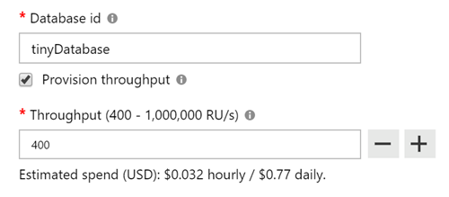
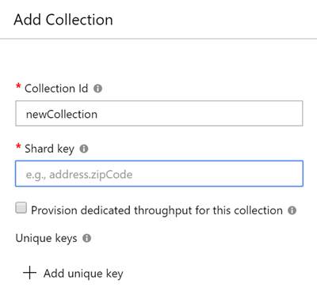

Squeezing & Sharding Cosmos DB
Recently I've been exploring the cost optimizations that are possible in Cosmos DB, and tripped over some interesting gotchas and side behaviors that I thought were blog worthy. This is mostly a ‘stream of consciousness’ of the various problems I bounced off, but I'm sure I'm not the only that will to go through such a journey
Azure Cosmos DB is a great service with some huge features (global scale, low latency, replication, multi-model, multi API, etc). As a PaaS NoSQL offering it's naturally attractive for smaller projects too, however the snag quickly becomes the apparently high price
UPDATE. Since publishing this post, the Cosmos DB team and product manager reached out to me directly about some of the issues I mentioned. Firstly I wanted to say how amazing it is having the product group engage with bloggers and the community like this! Secondly they are looking to address some of problems I encountered, which is great.
For large scale enterprise/global apps the price is justified, but when working on a demo or prototype it can be more painful to use.
A couple of concepts and terms before we move on. Cosmos DB is sized & priced on ‘RU/s’, which is “Request Units per second”, I'll steal a quote from the docs to explain this one:
You can think of RU/s as the currency for throughput. RU/s is a rate-based currency, which abstracts the system resources such as CPU, IOPS, and memory that are required to perform the database operations supported by Azure Cosmos DB
The other thing I'll be talking about is Cosmos DB databases and collections, a database is pretty self explanatory. Under a database you create one or more collections. A collection is basically like a table in a traditional relational database system.
Originally Cosmos DB only allowed allocating your RU/s at a collection level, with a minimum of 400 RU/s per collection. It wasn't uncommon for projects have hundreds or even thousands of collections in a database, especially for those migrating from MongoDB. As a result the costs could really stack up
More recently RU/s can now be allocated at the database level, and have Cosmos DB share those RU/s across all collections in it. This comes with some conditions which are covered in the docs, there's also some other “side effects” which I'll go into.
Sharding Surprise
I have a Cosmos DB account (running in MongoDB mode) used for my Smilr project. As I leave it running in one of my personal Azure subscriptions, but only use it for demos I wanted to see how I could squeeze the costs to a minimum and really pinch those pennies
I only have three collections so rather than pay for 1200 RU/s (three collections at 400 RU/s each) I wanted to try to fit them into a 400 RU/s database. So I created the new database with the magic (and easy to miss) “Provision throughput” checkbox
Great I thought, point my app at the new database, import my backed up data - job done. However I started to hit some problems. I was using the MongoDB API and with MongoDB, collections are dynamically created the first time you insert something into them. Basically you never need to run “CREATE TABLE blah”, they just pop into life the first time your code needs them.
I fired up the data API part of my Smilr app pointing at the new database and saw a bunch of errors
MongoError: Shared throughput collection should have a partition key
Sigh.
After some head scratching, I checked the Azure portal to try to create the collections manually, there I noticed that something called a “Shard key” was a required property
I was already familiar with the concept of “sharded” or partitioned data storage schemes from playing with Azure Tables, Service Fabric and DocumentDB. This is a huge topic which I don't really want to get into here, needless to say it's something you don't get for free, it requires some planning.
I had to pick some properties in my data which could sensibly divide and split up my data, this was the easy part, I had sensible partition/shard keys I could use. After creating my collections manually in the portal (rather than letting my code auto create them) and setting the shard key properties I had picked. Bingo! No more errors when I started my data API, time to import my data backups…
I Got The No RUs Blues
My existing data was tiny (less than 600 documents in all) but I didn't want to lose it. I used mongoexport to backup my data, so naturally I used mongoimport to reimport it. I kicked off the command and was confronted with a wall of errors :( the main one I spotted was
Message: {"Errors":["Request rate is large"]
Accompanied with a HTTP 429 error - I was being throttled and rate limited. Well it turns out that 400 RU/s isn't a lot, 400 operations per section to be precise. The mongoimport was busting this limit with ease.
Sigh.
Simple solution - I scaled up my throughput on my database to 5000 RU/s (that was a guess) and re-run. The import sailed through no problem, after this I scaled it back down to 400 RU/s
Shards of CRUD
Now I had my database running at 400 RU/s with three collections inside it and all my data. Mission accomplished? So I thought…
Initial testing everything looked good, until I came to do an update or delete, where I got a strange error
query in command must target a single shard key
This was coming from my data access wrapper where I do my CRUD database operations against Mongo. Turns out that certain operations, namely update and delete require not only the id of the document, but also the shard key that I had picked.
Sigh.
It was a case of adding my key field and value (in this case it was a ‘type’ property I used to categorize my entries) to the Mongo query statement along with the id. A tiny change, BUT the snag was my app was a presenting a nice clean REST API. E.g. to delete event 6537 I would make an HTTP call like DELETE /api/events/6537 I didn't also pass the type, and didn't want to clutter up the API with implementation details like that
The compromise was to add a extra step inside my API route controllers to first fetch the record by the id, grab the type, then pass the id + type field to the lower level Mongo wrapper, where I call the actual delete/update. Again not a huge change but I wasn't anticipating requiring any code changes just to run in a slightly cheaper database!
Azure Functions
One aspect of the Smilr application is a serverless version of the API, using Azure Functions
As my data API was written in Node.js it wasn't a huge job to port it over and replace my Express API routes with separate functions in a Azure Functions App, along with my data access library
One additional function I had was triggering off updates to the Mongo / Cosmos collection and running it through Cognitive Services for sentiment analysis. This was done with the Cosmos trigger binding. If you follow that link you will see the Mongo API isn't actually supported, but I found for triggers it actually works fine, as long as you use strings for your document ids
The trigger binding wants to create a collection inside your Cosmos DB database called ‘leases’ so it can keep track of which documents it processes.
UPDATE. When originally wrote this post I discussed an issue with the creations of the leases collection in the sharded Cosmos database which was a show stopper. I have subsequently resolved this, so I'll cover what I did wrong!
I found that the leases collection wasn't being created, in order to fix this I changed two things.
- Firstly updated the version of the Cosmos DB extension in my Functions app to 3.0.3 this version supports sharding. I edited the extensions.csproj file and changed the PackageReference as follows
<PackageReference Include="Microsoft.Azure.WebJobs.Extensions.CosmosDB" Version="3.0.3" /> - I spotted I had
"leasesCollectionThroughput": "400"in my function.json file, this isn't a compatible setting as my RU/s are set at the database level, not the collection.
After these two changes, I found everything worked! And any documents/records created in my collections triggered my function as I expected
Conclusion
I have a 400 RU/s database with my three collections nestled inside it, which was the goal I set out to achieve. I have managed to get my Cosmos DB costs down to a bare minimum. I will add, this size/scale of database I wouldn't recommend for anything other than testing or demos, it is very low throughput but that's always going to be the trade off
In this exercise learned a fair bit about Cosmos DB and MonogDB, plus the use of sharding in collections along the way, found a few bugs in my code, oh and decided to write a blog post about my adventure :)